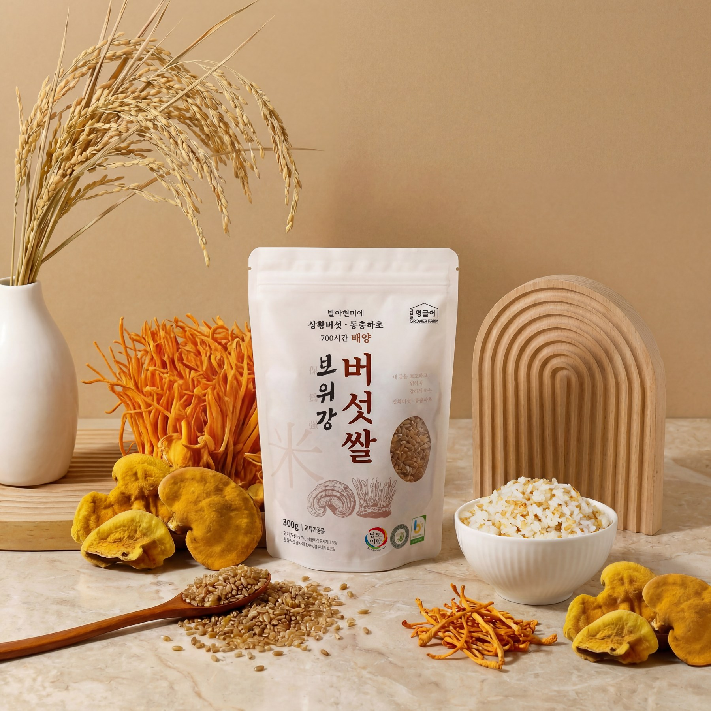

연결된 세 가지 사업
농산물에서
농산물에서
식품의 새로운 가능성으로.
과일·버섯·바이오 연구 사업은 재배, 가공과 제품 개발이라는 기반을 공유합니다.

과일 사업
기르고, 유통하고, 담아내다.
블루베리와 설아복숭아를 생산·유통하고 골든복숭아도 선보입니다. 자사 원물은 동결건조 과일칩과 분말의 기반이 됩니다.
과일칩은 매입한 딸기·감귤을 더해 네 가지 종류로 구성합니다.
과일 사업
버섯 사업
재배에서 식품으로 이어지다.
상황버섯, 동충하초, 노루궁뎅이버섯을 생산·유통합니다. 가공을 통해 보위강 버섯쌀, 진액과 머쉬라이스칩으로 연결합니다.
파로, 호라산밀, 병아리콩을 활용한 곡물 제품으로도 확장합니다.
버섯 사업
바이오 연구개발
성분을 연구하고,
성분을 연구하고,
다음 활용을 개발하다.
버섯 재배에서 연구개발로 확장합니다. 베타글루칸, 코디세핀, 에리나신 등을 연구하고 식품 소재로의 활용을 개발합니다.
현재 알부민상황버섯케어와 코디세핀20 등의 식품을 선보이며, 향후 건강기능식품으로의 확장을 추진하고 있습니다.
바이오 연구개발